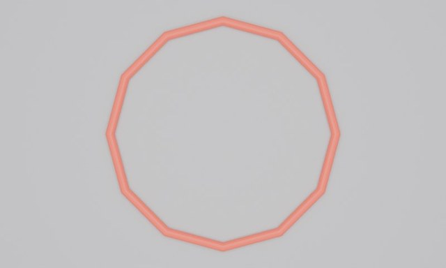
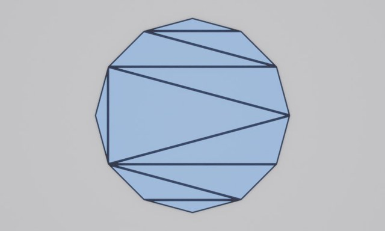
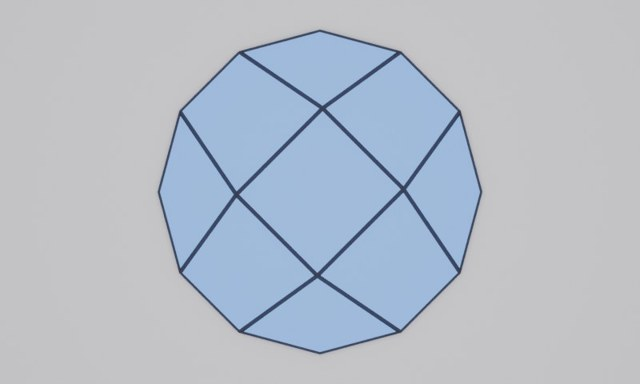

Bonus lesson
Fill and Grid Fill
Sometimes a mesh has an open ring of edges and you want a surface across it. Blender has two tools for this in Edit Mode, both in the Face menu. Fill (Alt+F) makes triangular faces from selected edges or vertices that form one or more complete rings. Grid Fill covers a closed ring with a grid of faces instead.



Fill
Select the edges or vertices that make a complete ring, then choose Face › Fill or press Alt+F. The manual says Fill supports holes, which a single n-gon face does not. It also has a Beauty option.
Grid Fill
Grid Fill works from a pair of open edge loops, from a single closed loop, or from selected faces with a single outer loop. It has Span, Offset and Simple Blending options. If the selection does not meet its conditions, it cancels with an error. The manual notes that opposite loops with equal numbers of vertices work best.
Read the manual pages on Fill and Grid Fill.
Try it
This exercise is our own suggestion and has not been run step by step in the GUI. Add a circle (Add › Mesh › Circle) with Fill Type set to Nothing so it is only a ring. Enter Edit Mode, select all, and press Alt+F to see triangles. Undo with Ctrl+Z, then try Face › Grid Fill and compare.